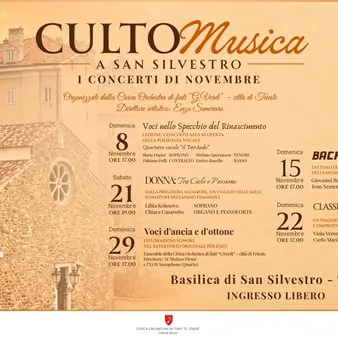

da dom 8 nov a dom 29 nov
Basilica di San Silvestro - Rassegna di concerti "CultoMusica a San Silvestro"
La Civica Orchestra di Fiati “G. Verdi” – città di Trieste presenta "CultoMusica a San Silvestro", una rassegna di cinque appuntamenti musicali con la direzione artistica di Enzo Semeraro, in programma dall' 8 al 29 novembre 2026 nella suggestiva cornice della Basilica di San…
 Indicazioni
Indicazioni
- Costi e prenotazioni
- Costo non indicato · Prenotazione non indicata
- Programma
- Programma da verificare. Apri la fonte ufficiale per orari e possibili aggiornamenti.
- In caso di maltempo
- Nessuna indicazione specifica pubblicata.
- Note
- Acquisito automaticamente dalla fonte.
L’EVENTO
Descrizione completa
La Civica Orchestra di Fiati “G. Verdi” – città di Trieste presenta CultoMusica a San Silvestro , una rassegna di cinque appuntamenti musicali con la direzione artistica di Enzo Semeraro, in programma nel mese di novembre nella suggestiva cornice della Basilica di San Silvestro a Trieste.
Dal Rinascimento alla musica barocca, dal repertorio lirico alle contaminazioni tra classica e jazz, fino alle sonorità degli strumenti a fiato, la rassegna propone un percorso attraverso stili e linguaggi differenti, valorizzando la musica dal vivo e le sue molteplici possibilità espressive.
Domenica 8 novembre, ore 17.00 – Voci nello Specchio del Rinascimento
Il quartetto vocale il TetrAedo , composto da Ilaria Ospici (soprano), Fabiana Polli (contralto), Stefano Speranzon (tenore) ed Enrico Basello (basso), accompagnerà il pubblico alla scoperta della polifonia rinascimentale attraverso le opere di grandi compositori come Palestrina, Tallis, Arcadelt e Victoria. Una lezione-concerto per esplorare l'intreccio delle voci e la ricchezza di una tradizione musicale senza tempo.
Domenica 15 novembre, ore 17.00 – Bach to the Future
Il pianoforte di Giovanni Baldini e la chitarra classica di Ivan Semenzato renderanno omaggio a Johann Sebastian Bach attraverso alcune delle sue pagine più celebri. Un percorso d'ascolto dedicato all'attualità e all'avanguardia della sua musica, per scoprire la complessità del contrappunto e della polifonia e la sorprendente modernità del compositore.
Sabato 21 novembre, ore 19.00 – DONNA: Tra Cielo e Passione
La soprano Liliia Kolosova , accompagnata da Chiara Casarotto all'organo e al pianoforte, proporrà un viaggio nelle molteplici sfumature dell'animo femminile, dalla preghiera all'amore. Articolato in cinque momenti – il mistero, la passione, il sogno, la perdita e la rinascita – il programma intreccia repertorio lirico, colonne sonore e canzoni celebri, con musiche di Bizet, Saint-Saëns, Gershwin, Morricone e altri autori.
Domenica 22 novembre, ore 17.00 – Classicalmente Jazz
La voce di Viola Veronica Macaione e la chitarra di Carlo Maria Zugna daranno vita a un incontro tra il rigore della chitarra classica e la libertà espressiva del jazz vocale. Il programma attraversa la canzone d'autore italiana e il pop internazionale, con brani di Pino Daniele, Noemi, Alex Baroni, Billie Eilish e Aretha Franklin, in un dialogo tra sonorità e sensibilità musicali differenti.
Domenica 29 novembre, ore 17.00 – Voci d'ancia e d'ottone
La rassegna si concluderà con l' Ensemble della Civica Orchestra di Fiati “G. Verdi”, diretto dal M° Matteo Firmi , insieme all' EOS Quartet , quartetto di sassofoni. Al centro del concerto la Serenata in re minore per strumenti a fiato, violoncello e contrabbasso op. 44 di Antonín Dvořák, composta nel 1878: una partitura che unisce eleganza classica, calore melodico e vitalità ritmica, valorizzando la ricchezza timbrica degli strumenti a fiato.
Tutti i concerti si terranno nella Basilica di San Silvestro, a Trieste, con ingresso libero fino ad esaurimento dei posti
IL PROGRAMMA
Programma e orari
Appuntamenti raccolti dalle fonti elencate. Dove manca un orario, non è ancora disponibile in questa scheda.
Programma pubblicato
- Dal 2026-11-08 al 2026-11-29
INFORMAZIONI UTILI
Prima di partire
- Controllare la fonte prima di partire.
ORGANIZZAZIONE